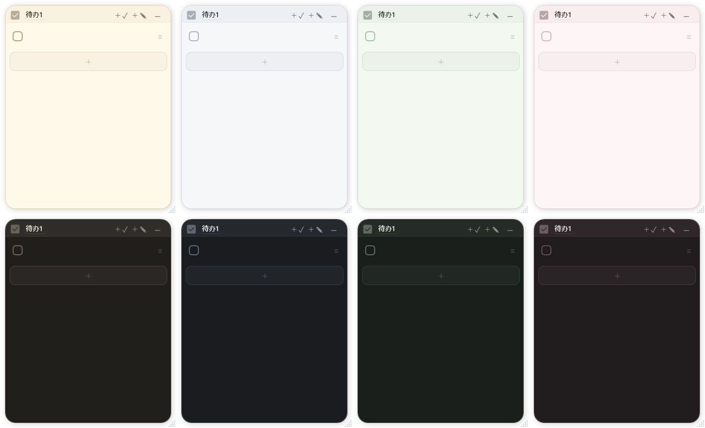
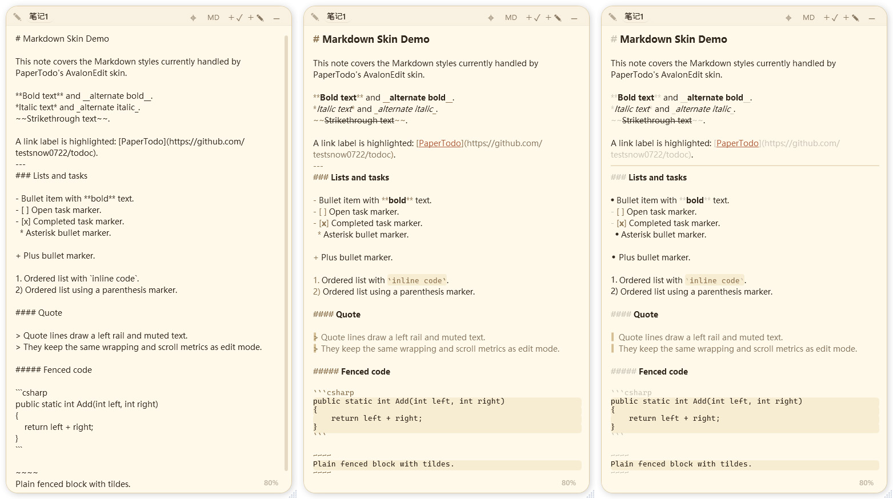
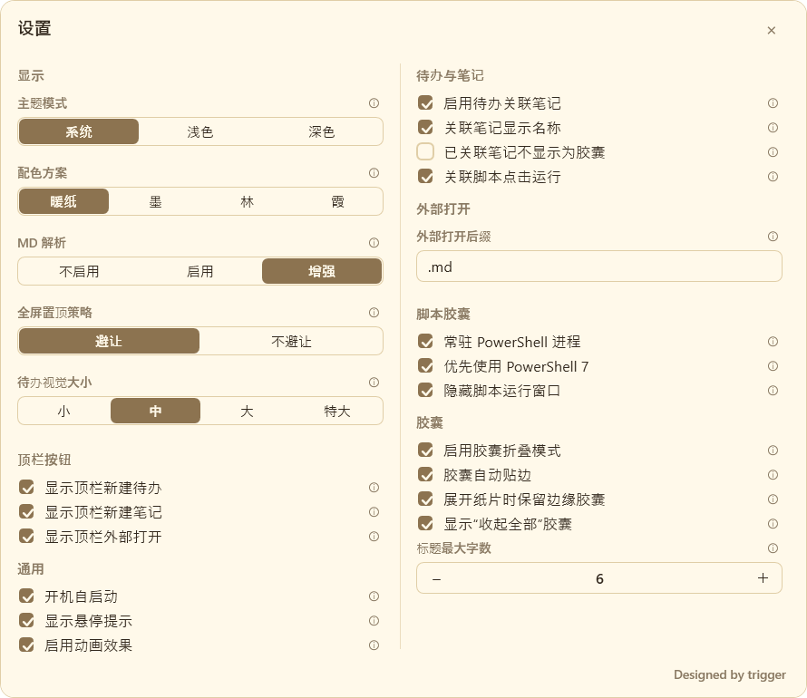
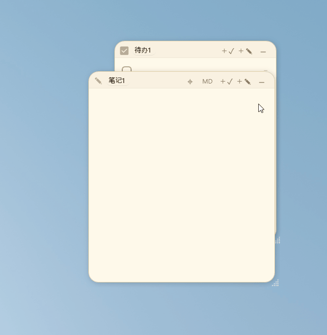
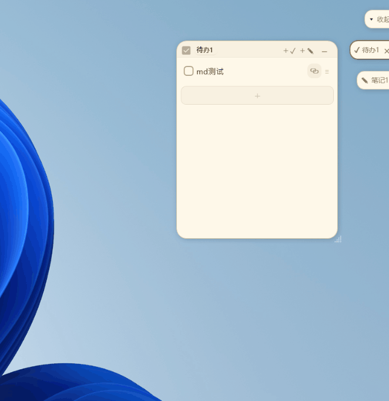
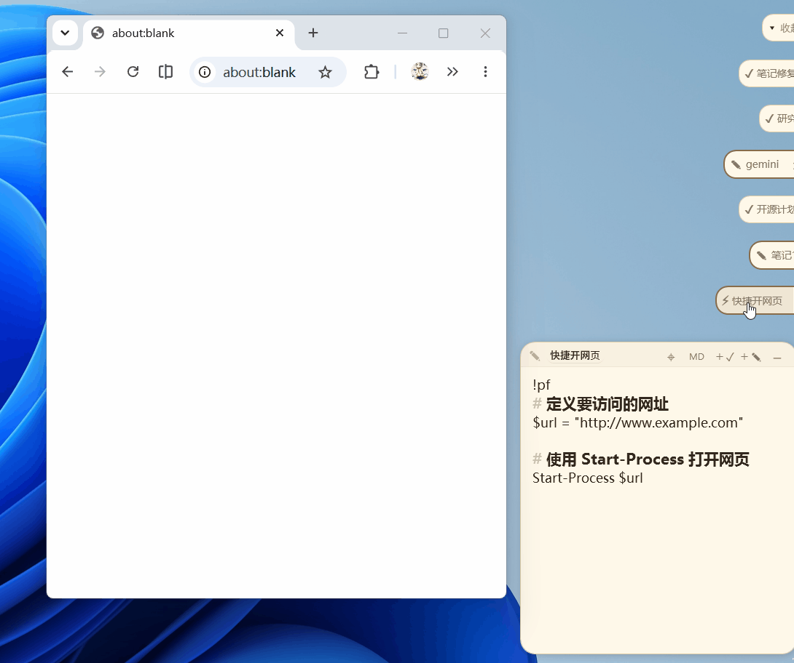
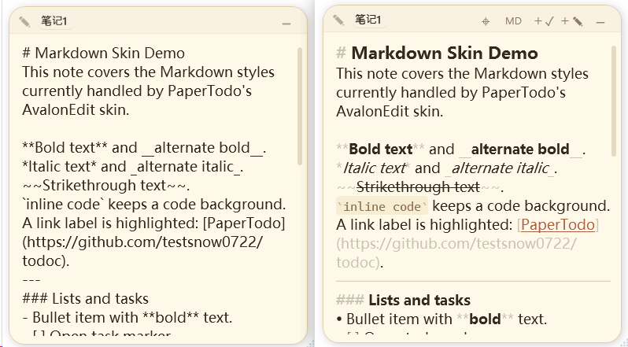

每张待办和笔记都是独立无边框窗口，位置、尺寸、置顶和内容自动保存。
它不是任务管理器，只是桌面上的几张纸
PaperTodo 不做账号、同步、分类、标签、统计和集中列表页。你写下当天要做的事，勾掉它，或者把一张笔记折成小胶囊放到边上。
待办适合当天小清单；笔记支持轻量 Markdown 显示和编辑辅助。
纸片可以折叠为小胶囊，自动贴到屏幕边缘，需要时再唤回。
数据保存在程序目录的 data.json，没有账号，也没有云同步。
使用 Windows 原生桌面技术实现，不是 WebView 或 Electron 套壳。
GitHub Releases 提供 SHA256 校验和 Sigstore 签名文件，方便核对官方版本。
真实桌面形态
第一屏就是它的主要工作方式：纸片直接存在于桌面，而不是藏在一个管理窗口里。



小工具该有的工作流
常用动作保持在桌面上，复杂度留在设置里。胶囊、脚本和自定义外观都服务于这一点。

把纸片折起来
纸片不需要一直占用桌面，可以折成小胶囊，点击后恢复。

让胶囊靠边停放
贴边胶囊支持多屏队列，减少遮挡，也方便快速找回。

脚本也可以是一张纸
笔记首行写入脚本标记后，折叠胶囊可作为轻量脚本入口。

保持自己的桌面气质
主题、配色、字体和按钮显示可以调整，但不改变它是一张纸的核心。
适合谁，也不适合谁
PaperTodo 的边界很窄。它服务的是桌面上的短清单和轻笔记，不试图替代完整任务系统。
适合
- 想把当天待办直接放在桌面上的 Windows 用户。
- 需要本地保存、无账号、无同步的小工具用户。
- 喜欢便签形态，但希望待办和 Markdown 更顺手的人。
不适合
- 需要团队协作、云同步、提醒、日历和统计的人。
- 需要完整 Markdown 编辑器、图片、表格和附件的人。
- 希望所有任务都进入统一管理后台的人。
下载官方版本
推荐从 GitHub Releases 下载。第三方分发版本不代表官方发布，必要时可用 SHA256 和签名文件核对。
Source available freeware
PaperTodo 目前免费提供，并公开源码用于透明、审计和学习参考。官方版本以 GitHub Releases 为准。